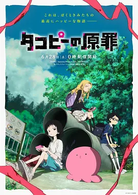

7.9
章鱼噼的原罪
Takopi’s Original Sin
2025
日本
评分 7.9
导演:
饭野慎也
演员:
间宫胡桃 / 上田丽奈 / 小原好美 / 永濑安奈 / 恒松步
类型:
剧情,奇幻
剧情简介
章鱼哔来自名为“HAPPY星”的地方，他对地球的一切都充满憧憬。初到人类世界时，他笨拙得几乎饿倒在路边，是少女小静把他捡回家，让他第一次体会到“被救起”的温度。章鱼哔天真、善良，总相信给别人带来快乐能够改变所有问题，因此他决心要让小静重新露出笑容。但他很快察觉，小静的沉默与疏离背后隐藏着沉重的阴影。校园里、家庭中，那些压抑得难以言说的情绪在她周围不断积累，让她即便面对一个来自星空的外星访客，也难以真正松开肩上的负担。章鱼哔尝试用自己的方式介入：陪伴、帮助、制造小惊喜，却总是差一分把握不到人类的复杂。他的善意常常笨拙，甚至会在无意间让事情变得更难处理。随着故事推进，章鱼哔逐渐意识到，小静所承受的压力远非“HAPPY”二字可以轻易化解。他在努力理解人类情绪的过程中，被迫面对一个残酷的问题——当天真与现实碰撞，他是否也在不知不觉间推动了某些无法逆转的后果。动画在轻柔的画面与近乎童话的设定中，不断掀开更深层的暗涌，展现一段关于陪伴、误解与责任的沉痛旅程，让观众在温暖与刺痛间不断摇摆。